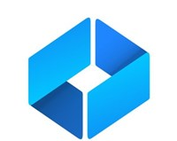

AS
.
dev
UZ
EN
☰
Asadbek
Sunnatov
Kotlin · Spring Boot · Next.js
20+
1+
2
15+
Samarqand, UZ
TATU Samarqand
WOOX MCHJ
Kotlin & Spring Boot
▲
Next.js & TypeScript
PostgreSQL & Prisma
Telegram Bot API

t.me/ait_akademiya →
Kotlin
Java
Spring Boot
Spring Security
Spring Data JPA
NestJS
Node.js
Prisma ORM
TypeScript
React
Next.js
Tailwind CSS
Zustand
shadcn/ui
PostgreSQL
SQLite
Prisma Migrate
JPA / Hibernate
JWT Auth
REST API
Telegram Bot API
Leaflet.js (GIS)
Swagger / OpenAPI
Git & GitHub
Docx / PDF generatsiya
AI integratsiya
sunnatovasadbek004@gmail.com
+998 88 408 88 03
Telegram
Instagram
↑
 Kotlin & Spring Boot
Kotlin & Spring Boot PostgreSQL & Prisma
PostgreSQL & Prisma Telegram Bot APIKotlin & Spring BootPostgreSQL & PrismaTelegram Bot API
Telegram Bot APIKotlin & Spring BootPostgreSQL & PrismaTelegram Bot API